Brand Design
Creating a brand that survived an acquisition
A two-week rebrand that grew into billboards, a Property Brothers campaign, and a visual brand Pine still uses today.
- Company
- Properly
- Year
- Oct 2019
- Role
- Product Designer
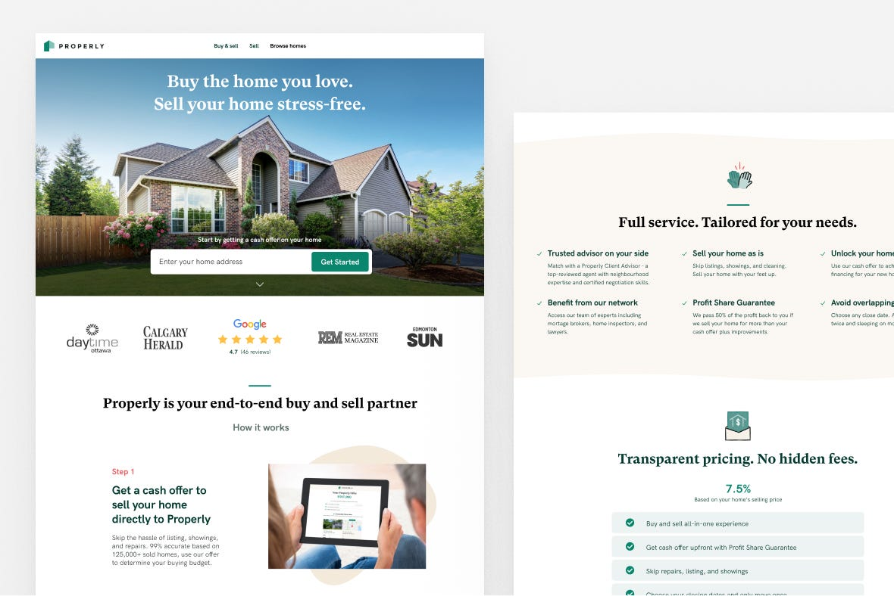
Visualizing a more human brand
Since Properly launched in 2018, we’ve come a long way. We started as many start-ups do: fast, and scrappy. And our visual brand was no exception.
So we decided to improve it.
But a company’s brand is more than just its logo and some colours. It’s a first impression and the way people think and feel about the business. We recognized we had an opportunity to elevate the brand to the next level to better reflect our growth as a company and the value for our customers.
Why it was time for change
While we were busy serving customers, we were also working towards reaching a whole new audience with digital products online. Before attracting hundreds of thousands of people to our online listing site en masse in November 2019, we felt we should seize the opportunity and revisit our current visual and to ensure our visual language reflected our ideals as a company.
Buying and selling a home is deeply emotional. It’s often life’s largest transaction involving exciting highs and stressful lows. While traditional real estate branding is often transactional, focused on the sale or the realtor, we want to represent the aspirational part of real estate and focus on the people moving through this phase of life.
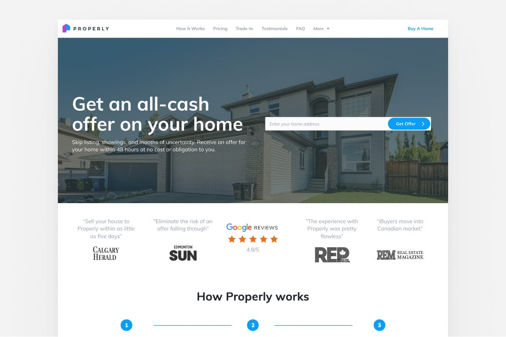
As we set goals for this project, we ran into some more existential questions. What is Properly’s current brand personality? How should the brand personality change, if at all? What is the right tone to set? How do we measure a higher standard? Where are we now?
I don’t want to be dramatic and call it a ~rebrand~, but it was definitely time for some realignment.
Defining our values
The first place to start was to look within. Working internally we aligned on a few guiding words:
We’re human and welcoming. We understand how home is deeply personal and buying and selling is an emotional decision.
We’re humble and thoughtful. We admit when we don’t have the right answers and go the extra mile to find it.
We’re accommodating and reliable. There isn’t a one-size-fits-all solution in real estate. Everyone has a unique situation and we find a unique solution and follow through.
We think differently. We’re not bound to the traditional way of doing things. We will think outside the box and then use that box as a stepping stone to the new and improved solution.
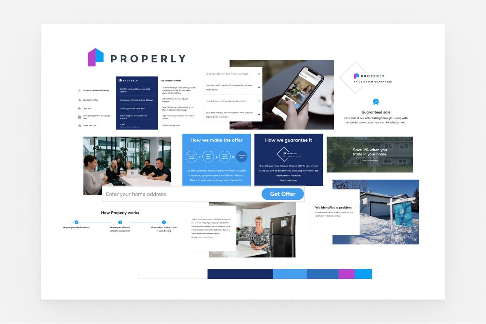
Our existing brand and visual language wasn’t terrible. A few customers even said they liked our style.
But we agreed our newly-framed values were not being reflected in the visual language. For starters, we wanted to move away from the stark, cold colour palette and bring in warmer elements. Our goal was to anchor the visuals in a homey and aspirational feeling you get when hunting for your next home.
Colours, shapes and typography have the power to invite people in or put them off
Moodboards were our primary tool for early exploration of all sorts of different visual directions. They helped us have conversations about who we are, and who we are not.
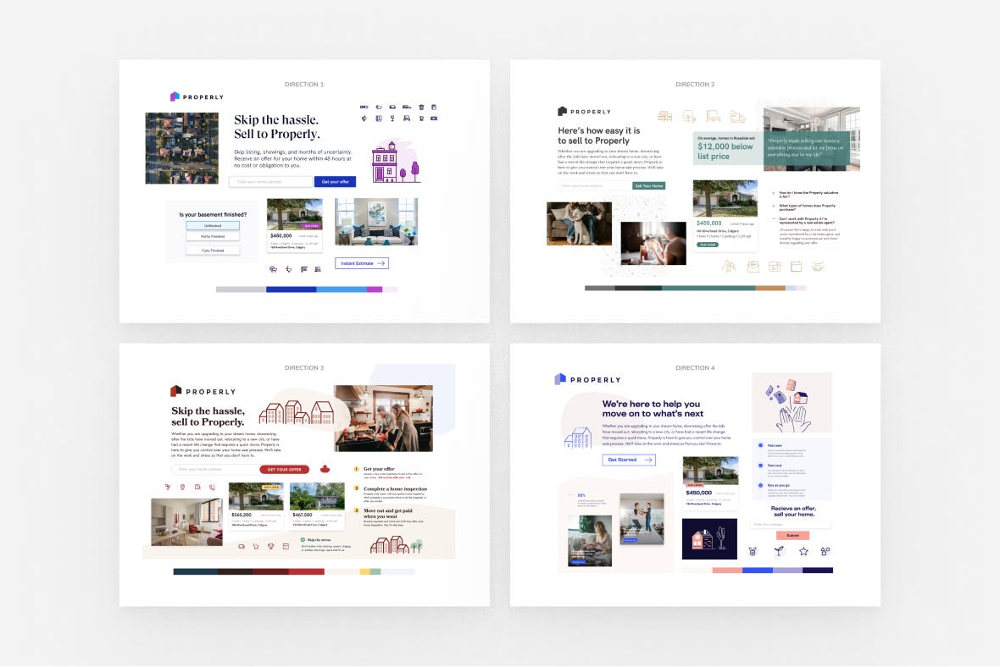
If we used pastel colours, what did that say about us? Are thick strokes and rounded edges too juvenile? Would you trust a company to sell your home if their primary colour was bright pink?
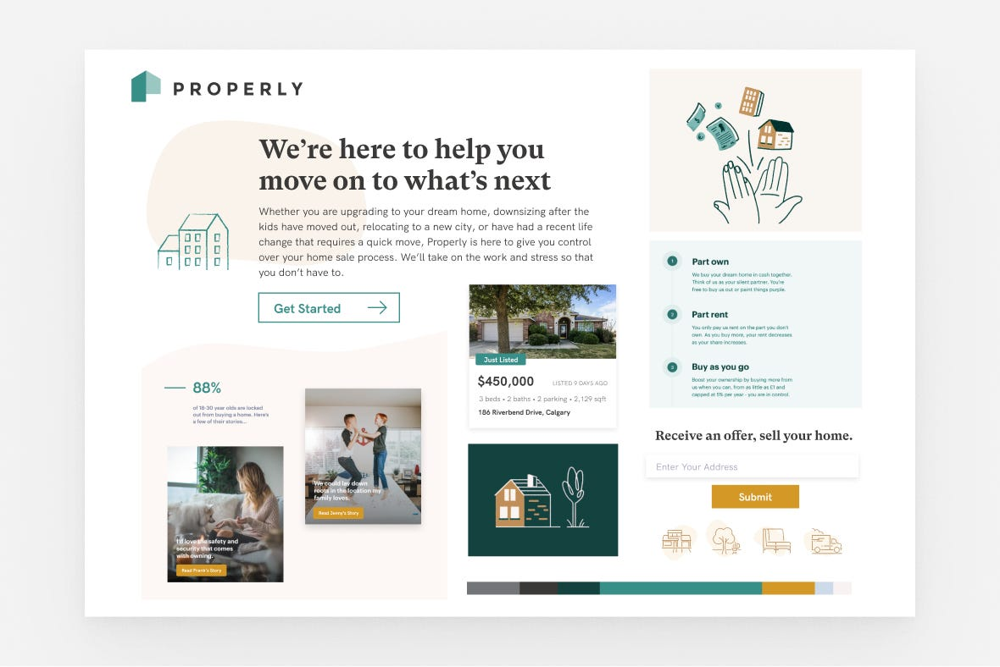
Moodboards helped us identify the visual elements that resonated as well as those that didn’t, and why. As a team, we landed on green as our new primary colour. It evokes a sense of groundedness, money, and security, paired with gold to bring energy and excitement. For more human warmth we experimented with organic shapes and textured strokes. And to communicate that we are welcoming and accommodating, we swapped out our headlining font for a bold serif.
Once we were internally excited about this direction, it was time for a true stress test: getting feedback from real users.
Finessing and levelling up design with real user feedback
You know when you’re too close to the work that you’re just blind to it? External feedback is a sure way to snap you out of that. We launched a perception study with real Canadians and asked,“What are the first 3 words, feelings, or thoughts that come to mind when you see this board?” amongst other questions.
And the results were a great signal that we were headed in the right direction.
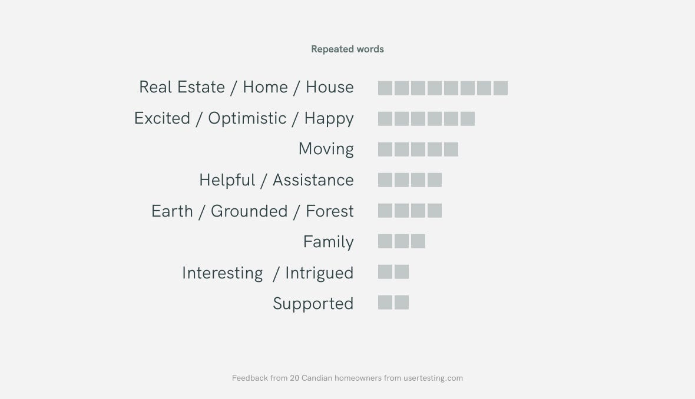
User testing lets us push our work further as we collect insights, some already known and some new to us. Hearing directly from users gives us quantitative insights such as: “The colours remind me of a bank”. We tested various colour palettes to gain perspective as to the emotions evoked by colour. We learned that greens resonated more than red brick tones in this context and higher contrast palettes were more memorable.
We get to hear some very thoughtful insights such as: “Exterior images of a listing make me excited to buy a home, lifestyle images help me feel excited to live in it.” We remember this comment to this day when selecting imagery.
Realizing the new look
A moodboard is but a mere collection of images. It was time to roll it out into the real world. We mocked up some real-life examples to see the visuals in action.
Applying the visual direction to real-life applications gives us a sense of how the look will come together across our channels like web, social, and offline. It is also a mini stress test that ensures our visuals are flexible enough to adapt to the different applications that we need it to.
To roll things out to production, the first thing we updated was our website, as it acts as an anchor for the rest of our materials. We also put together brand guidelines documentation, not only to align the team to maintain consistency but also to have a record of changes as the brand inevitably evolves.
This project was no exception to the fast and scrappy way we do things. The creative and testing process took only 2 weeks. As fast as our new look came together, came the fact that we were already ready to improve and evolve it — we’ve continued to build on our brand identity and visual brand since the first day it was implemented. And with new customers, employees, features, and services, our brand will continue to grow and evolve alongside the change.
Originally published on Inside Properly, July 23, 2021.
My role
I was the first and solo designer on this project and worked directly with the founders, PM, and Head of Marketing at the time. Gabe joined the team in Dec 2019 (Design Lead) and the two of us grew the Properly brand together for the following years.
Bringing the new brand to life over the following years
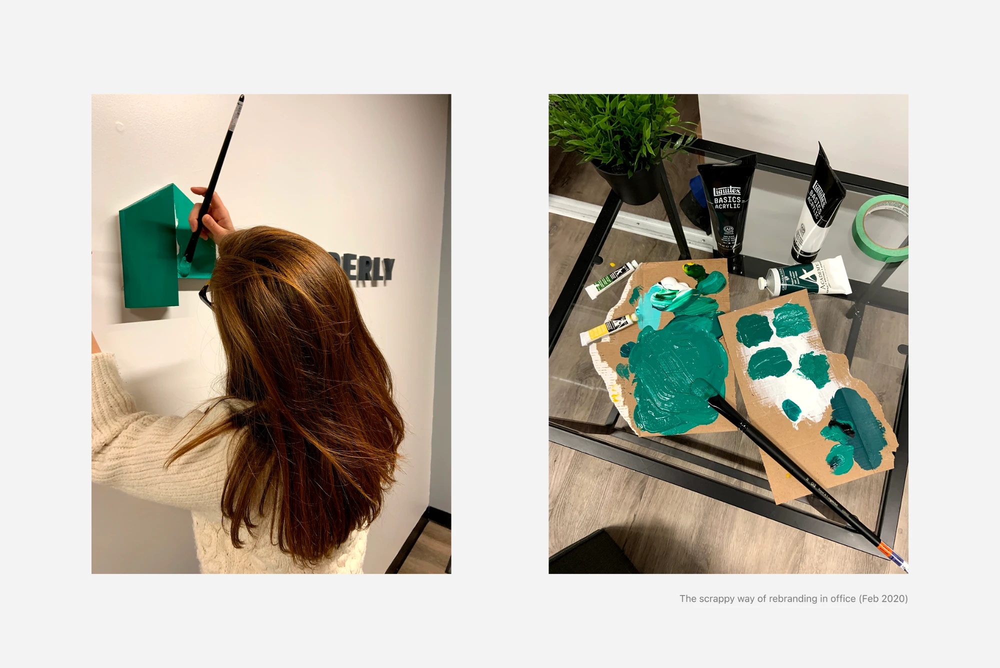
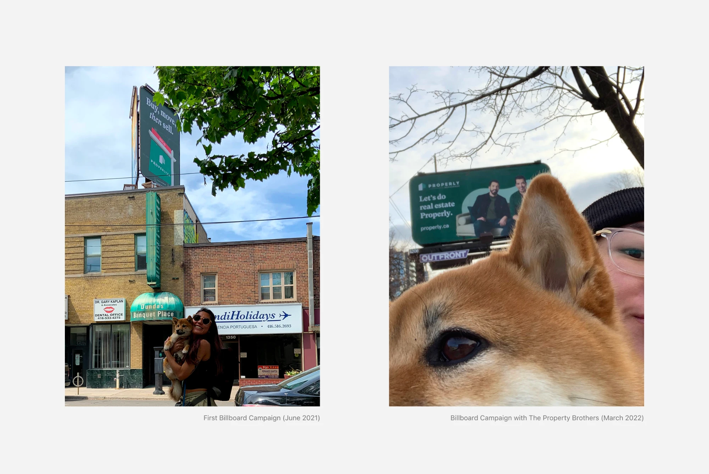
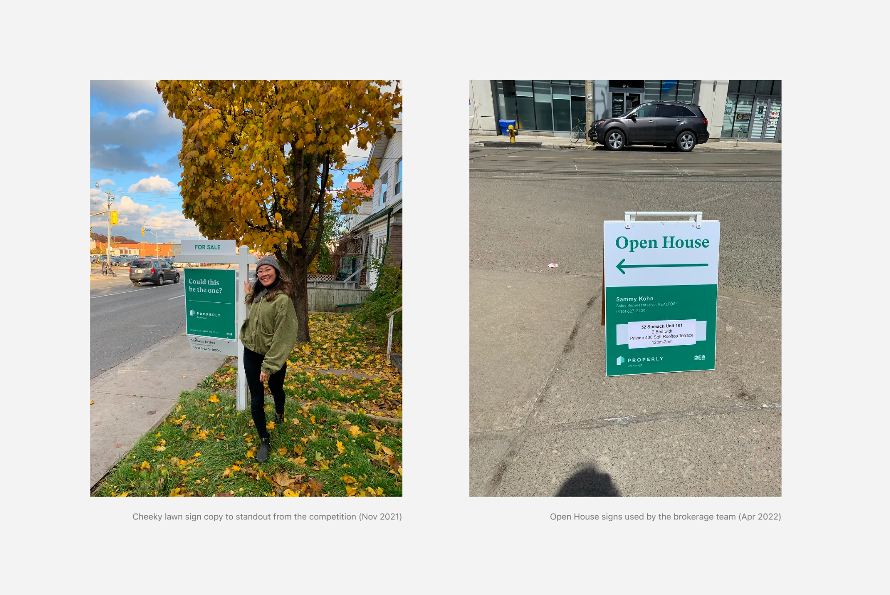
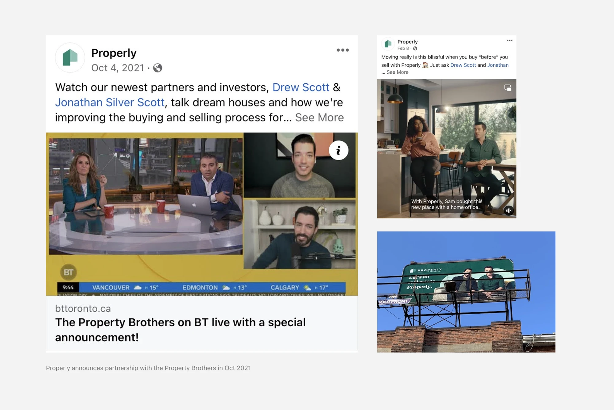
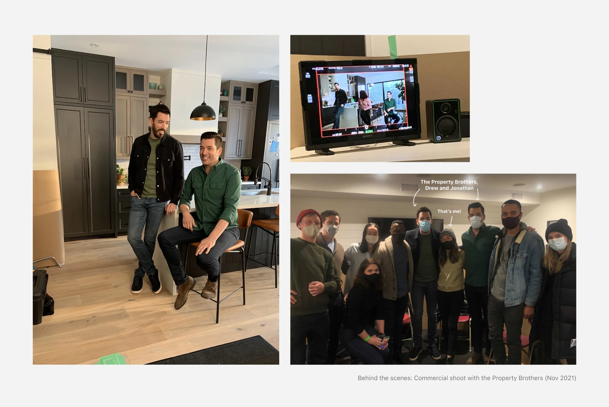
Pine adopted Properly’s visual brand after the acquisition in Oct 2023
And still uses this visual brand to this day.
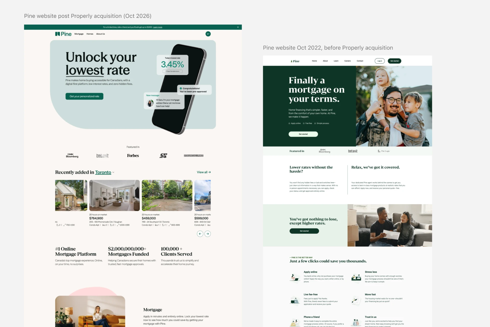